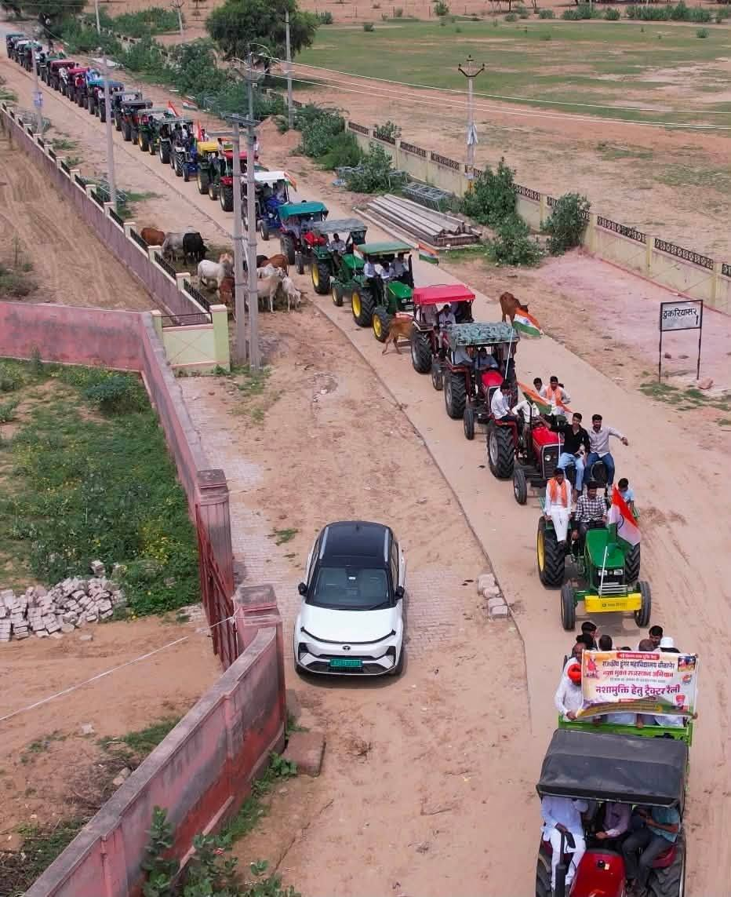

पहचान एवं प्रोत्साहन
सम्मान एवं प्रेरणा
अच्छे कार्यों को पहचान
सामाजिक परिवर्तन को गति देने के लिए सकारात्मक उदाहरणों को सम्मानित करना आवश्यक है।
जब किसी गाँव, विद्यालय या परिवार के अच्छे काम को सबके सामने सराहा जाता है, तो आसपास के दस और गाँव उसी रास्ते पर चलने का साहस करते हैं। लोकसंकल्प सम्मान इसी उद्देश्य से दिए जाते हैं।
सम्मान किसी प्रतियोगिता का परिणाम नहीं है। यह उन प्रयासों की पहचान है जो अभियान की अपनी गतिविधियों (सभाओं, समितियों, संकल्पों और कहानियों) में दिखाई देते हैं।
पाँच श्रेणियाँ
सम्मान श्रेणियाँ
हर श्रेणी अलग तरह के योगदान को पहचानती है।
लोकसंकल्प ग्राम सम्मान
यह सम्मान उस गाँव को दिया जाता है जिसने ग्राम/वार्ड लोकसंकल्प सभा आयोजित की, समिति गठित की और अपने सामाजिक आयोजनों को नशामुक्त रखने का निर्णय लिया।
गाँव की भागीदारी, नियमित सभाएँ और भेजी गई रिपोर्ट इसका आधार बनती हैं।
लोकसंकल्प शिक्षक सम्मान
यह सम्मान उन शिक्षकों के लिए है जिन्होंने कक्षा से आगे बढ़कर अभिभावक संवाद, विद्यार्थी गतिविधियाँ और ग्राम/वार्ड स्तर की पहल शुरू कीं।
प्रशिक्षण में भागीदारी और साझा की गई पहल इसका आधार बनती हैं।
लोकसंकल्प विद्यालय सम्मान
यह सम्मान उस विद्यालय को दिया जाता है जिसने विद्यार्थियों और अभिभावकों को अभियान से जोड़ा और नियमित गतिविधियाँ चलाईं।
विद्यालय में लिए गए संकल्प तथा आयोजित कार्यक्रम इसका आधार बनते हैं।
लोकसंकल्प युवा क्लब सम्मान
यह सम्मान उन युवा क्लबों के लिए है जिन्होंने खेल, कला, पर्यावरण और स्वयंसेवा के माध्यम से युवाओं को सकारात्मक विकल्प दिए।
क्लब की सक्रियता और गाँव में किए गए आयोजन इसका आधार बनते हैं।
लोकसंकल्प परिवार सम्मान
यह सम्मान उस परिवार को दिया जाता है जिसने अपने विवाह, शोक सभा या अन्य आयोजन को नशामुक्त रखा और Good Parenting का उदाहरण प्रस्तुत किया।
परिवार द्वारा साझा की गई कहानी और गाँव की सहमति इसका आधार बनती है।
प्रक्रिया
नामांकन कैसे करें
नामांकन कोई भी नागरिक कर सकता है। आप स्वयं अपने गाँव, विद्यालय या क्लब का नाम भी भेज सकते हैं।
- श्रेणी चुनें। ऊपर दी गई पाँच श्रेणियों में से एक चुनें।
- विवरण तैयार करें। किया गया कार्य संक्षेप में लिखें, दो-तीन वाक्य पर्याप्त हैं।
- प्रपत्र भेजें। नीचे दिया गया नामांकन प्रपत्र भरकर भेजें।
- सत्यापन। ग्राम/वार्ड समिति या समन्वयक जानकारी की पुष्टि करते हैं, उसके बाद सम्मान की सूची बनती है।
नामांकन के लिए किसी शुल्क की आवश्यकता नहीं है। किसी भी प्रकार का शुल्क माँगा जाए तो वह लोकसंकल्प की ओर से नहीं है।
नामांकन प्रपत्र
नामांकन प्राप्त हुआ, साथी!
आपका नामांकन हम तक पहुँच गया है। सत्यापन के बाद इसे सम्मान सूची में शामिल किया जाएगा।
याद रखें : सम्मान केवल पुरस्कार नहीं, बल्कि समाज के लिए प्रेरणा का स्रोत है।
सम्मान की शुरुआत एक संकल्प से होती है
पहले संकल्प लें, फिर गाँव को जोड़ें। पहचान अपने आप बनेगी।